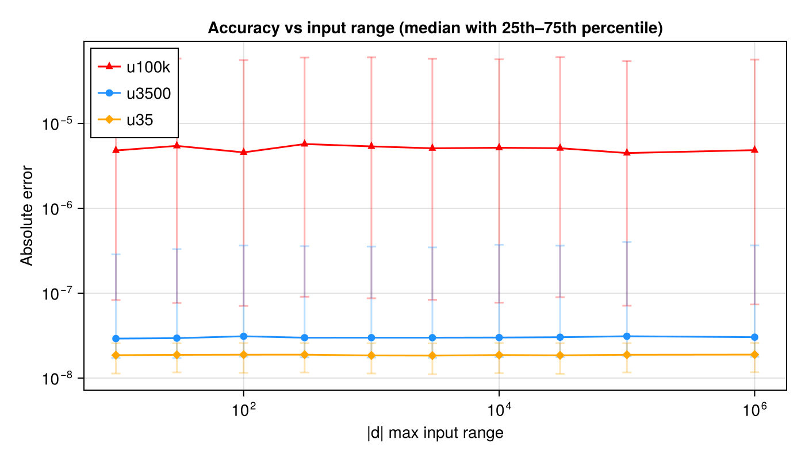

FastSinCos.jl
Fast SIMD sincos approximations for Float32, using SIMD.jl.
Ported from SLEEF polynomial approximations, with no deprecated dependencies (no LoopVectorization, VectorizationBase, or SLEEFPirates).
Functions
Three accuracy variants are provided:
| Function | Accuracy | Speed | Best for |
|---|---|---|---|
fast_sincos_u100k | ~100,000 ULP (~3e-4) | Fastest (~27% faster) | When ~3e-4 error is acceptable |
fast_sincos_u3500 | ~3500 ULP (~3.6e-6) | ~15% faster | When ~3.6e-6 error is acceptable |
fast_sincos_u35 | ~35 ULP (~6e-8) | Fast | When accuracy matters |
Both operate on SIMD.Vec{N,Float32} and return (sin, cos) as a tuple of vectors.
Usage guide
What is SIMD?
SIMD (Single Instruction, Multiple Data) allows a CPU to perform the same operation on multiple values simultaneously. Instead of computing sin one float at a time, SIMD processes 4, 8, or 16 floats in a single instruction.
SIMD.jl provides Vec{N,T} types that represent N values of type T packed into a SIMD register. For example, Vec{8,Float32} holds 8 Float32 values that are processed in parallel.
Basic usage
using FastSinCos
using SIMD
# Create a SIMD vector of 8 Float32 phases
phases = SIMD.Vec{8,Float32}((0.1f0, 0.5f0, 1.0f0, 1.5f0, 2.0f0, 2.5f0, 3.0f0, 3.5f0))
# Compute sin and cos of all 8 values at once
s, c = fast_sincos_u35(phases)
# s and c are each SIMD.Vec{8,Float32}Processing arrays in a loop
To process a Float32 array, load chunks into SIMD vectors using vload, process them, and write results back with vstore:
using FastSinCos
using SIMD
const W = 8 # SIMD width (8 for AVX2 Float32)
function compute_sincos!(sin_out, cos_out, input, n)
i = 1
@inbounds while i + W - 1 <= n
# Load W floats from the array into a SIMD vector
v = vload(SIMD.Vec{W,Float32}, pointer(input, i))
# Compute sin and cos of all W values simultaneously
s, c = fast_sincos_u35(v)
# Store results back to arrays
vstore(s, pointer(sin_out, i))
vstore(c, pointer(cos_out, i))
i += W
end
# Handle remaining elements with scalar fallback
@inbounds for i in i:n
sin_out[i], cos_out[i] = sincos(input[i])
end
endChoosing a variant
- Use
fast_sincos_u100kfor maximum throughput when ~3e-4 error is acceptable. - Use
fast_sincos_u3500when ~3.6e-6 max error is acceptable and you want ~15% more throughput. Typical use case: GNSS carrier generation. - Use
fast_sincos_u35when accuracy matters (~6e-8 max error).
All variants use Cody-Waite range reduction, so error is flat across all input ranges.
Performance tips
- 4x loop unrolling can give an additional ~25% speedup by reducing loop overhead and improving instruction-level parallelism. Compute 4 SIMD chunks of phases before doing the loads/stores.
- Phase accumulation (
phase += deltainstead of recomputing from index) avoids an int→float conversion per iteration. This is faster but accumulates floating-point drift over many iterations — only use for short blocks.
Accuracy vs input range
All variants use Cody-Waite range reduction, so error stays flat across all input ranges. The difference is in the polynomial order: u100k uses 2+2 coefficients (~3e-4 max error), u3500 uses 3+3 coefficients (~3.6e-6 max error), and u35 uses 3+5 coefficients (~6e-8 max error):
using FastSinCos, SIMD, CairoMakie
using Statistics
function error_stats(sincos_fn, range_max; n=10000)
errs = Float64[]
for _ in 1:n÷8
vals = ntuple(_ -> Float32(rand() * 2 * range_max - range_max), 8)
v = SIMD.Vec{8,Float32}(vals)
s, c = sincos_fn(v)
s_tup = NTuple{8,Float32}(s)
c_tup = NTuple{8,Float32}(c)
for i in 1:8
ref_s = sin(Float64(vals[i]))
ref_c = cos(Float64(vals[i]))
push!(errs, max(abs(Float64(s_tup[i]) - ref_s), abs(Float64(c_tup[i]) - ref_c)))
end
end
p25 = quantile(errs, 0.25)
p50 = quantile(errs, 0.50)
p75 = quantile(errs, 0.75)
return p25, p50, p75, maximum(errs)
end
ranges = [10, 30, 100, 300, 1_000, 3_000, 10_000, 30_000, 100_000, 1_000_000]
stats_u100k = [error_stats(fast_sincos_u100k, r) for r in ranges]
stats_u3500 = [error_stats(fast_sincos_u3500, r) for r in ranges]
stats_u35 = [error_stats(fast_sincos_u35, r) for r in ranges]
p25_u100k = [s[1] for s in stats_u100k]
p50_u100k = [s[2] for s in stats_u100k]
p75_u100k = [s[3] for s in stats_u100k]
p25_u3500 = [s[1] for s in stats_u3500]
p50_u3500 = [s[2] for s in stats_u3500]
p75_u3500 = [s[3] for s in stats_u3500]
p25_u35 = [s[1] for s in stats_u35]
p50_u35 = [s[2] for s in stats_u35]
p75_u35 = [s[3] for s in stats_u35]
fig = Figure(size=(700, 400))
ax = Axis(fig[1, 1];
xlabel="|d| max input range",
ylabel="Absolute error",
xscale=log10, yscale=log10,
title="Accuracy vs input range (median with 25th–75th percentile)")
rx = Float64.(ranges)
rangebars!(ax, rx, p25_u100k, p75_u100k; color=(:red, 0.3), whiskerwidth=8)
scatterlines!(ax, rx, p50_u100k; label="u100k", marker=:utriangle, color=:red)
rangebars!(ax, rx, p25_u3500, p75_u3500; color=(:dodgerblue, 0.3), whiskerwidth=8)
scatterlines!(ax, rx, p50_u3500; label="u3500", marker=:circle, color=:dodgerblue)
rangebars!(ax, rx, p25_u35, p75_u35; color=(:orange, 0.3), whiskerwidth=8)
scatterlines!(ax, rx, p50_u35; label="u35", marker=:diamond, color=:orange)
axislegend(ax; position=:lt)
fig
Lines show median absolute error over 10,000 random samples; bars indicate 25th–75th percentile (IQR). All variants maintain flat error across all input ranges thanks to Cody-Waite range reduction.
| $|d|$ range | u100k median | u100k max | u3500 median | u3500 max | u35 median | u35 max |
|---|---|---|---|---|---|---|
| ±10 | 4.5e-6 | 3.2e-4 | 2.9e-8 | 3.6e-6 | 1.9e-8 | 6.2e-8 |
| ±100 | 4.9e-6 | 3.2e-4 | 3.0e-8 | 3.6e-6 | 1.9e-8 | 5.8e-8 |
| ±1,000 | 5.3e-6 | 3.2e-4 | 3.0e-8 | 3.6e-6 | 1.9e-8 | 6.3e-8 |
| ±10,000 | 4.7e-6 | 3.2e-4 | 3.0e-8 | 3.6e-6 | 1.9e-8 | 6.3e-8 |
| ±100,000 | 4.7e-6 | 3.2e-4 | 3.0e-8 | 3.6e-6 | 1.9e-8 | 6.2e-8 |
| ±1,000,000 | 5.0e-6 | 3.6e-4 | 3.1e-8 | 4.2e-6 | 1.9e-8 | 6.1e-8 |
Performance
On a typical x86-64 CPU with AVX2 (Vec width 8), processing 25K Float32 samples in a downconvert workload:
| Approach | Time | Max error |
|---|---|---|
| FastSinCos u100k | ~9 μs | 3e-4 |
| FastSinCos u3500 | ~10 μs | 3.6e-6 |
| FastSinCos u35 | ~12 μs | 6e-8 |
| SIMD.jl built-in sin/cos | ~127 μs | |
| Base.sincos | ~370 μs |